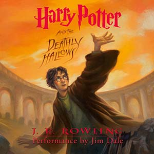
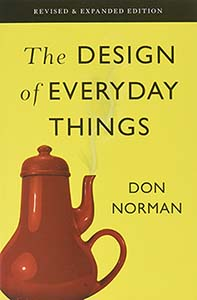
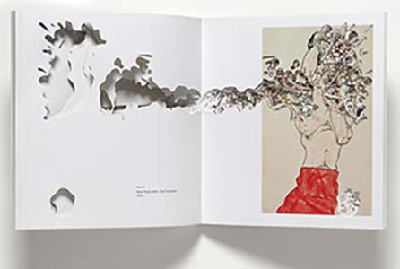

I use to dislike reading because I thought it was boring...
But now, I love it! Reading helps me unwind and relax. But most importantly, it allows me to learn something new! I also enjoy reading and interacting with creative artist books. Here are a few of my favorites:
Harry Potter
Harry Potter is a magical book that takes me to another world. Whenever I felt lonely, I would dive into the Harry Potter series and invest my time into some Hogwarts adventures! I have made awesome memories reading this book!
The Design of Everyday Things
This book is very meaningful to me as it taught me so much about the world of design. Not only should products look good and feel good, but it has to be useful and seamless in our everyday lives. This book dives deep into the psychology of design.
Artist Book
Coming from art school, I was able to see awesome artists book made by print majors at the end of the year. These were creative and interactive books that completely redefines what it means to be a book. These books are poetic, emotional, and beautiful...